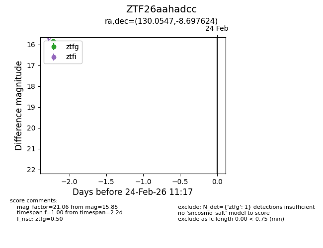
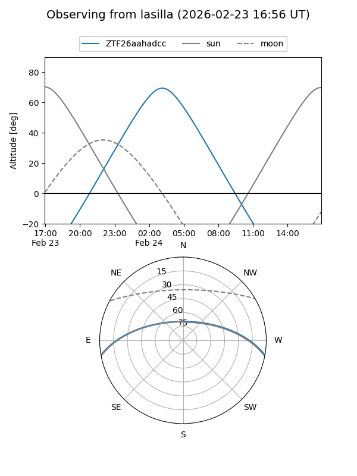
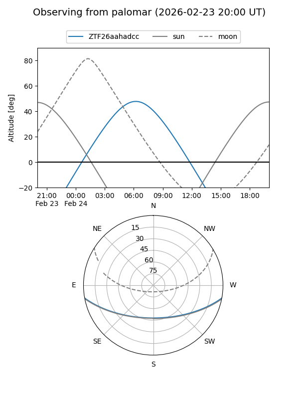

ZTF26aahadcc
Target ZTF26aahadcc at 2026-02-24 11:19
Aliases and brokers:
FINK: link
Lasair: link
ALeRCE: link
alt names
ZTF26aahadcc (ztf,fink_ztf)
Coordinates:
equatorial (ra, dec) = 130.0547,-8.69762
equatorial (HMS+DMS) = 08:40:13.13,-08:41:51.44
galactic (l, b) = (234.1066,+19.45791)
Flags:
Photometry:
last ztfg=15.85
1 ztfg detections
Lightcurve

Visibility


Additional plots